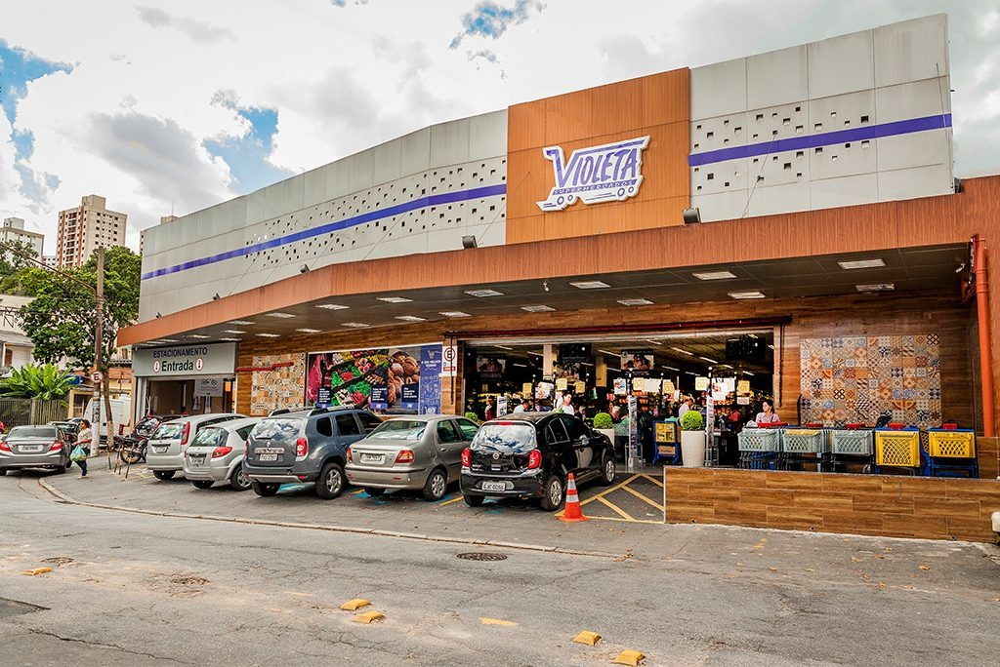

Carrefour Mutinga
Para receber o modelo Nova Geração, os hipermercados são totalmente transformados. Dentre as principais mudanças promovidas pelo novo modelo estão comunicação visual mais simples e intuitiva, setor de Eletro próximo à entrada da loja e destaque para o sortimento sazonal não alimentar no setor Casa. No Mercado, que abrange o açougue, peixaria, padaria, hortifrúti, queijos e frios, o cliente tem uma visão 360º dos produtos e o atendimento é feito por profissionais especializados. As áreas de mercearia, bebidas, artigos de limpeza e produtos de beleza também foram reformuladas e ressaltam os lançamentos das principais marcas do mercado, além de produtos Carrefour.
Violeta Turística
A história começou a ser construída em 1958 quando o nome Violeta surgiu pela primeira vez através do Café Violeta, onde José Pontes, ainda menino, ajudava seu pai nas tarefas do dia a dia e ao mesmo tempo incorporava a essência do negócio que anos mais tarde se tornaria o Restaurante e Pizzaria Violeta, que continua em atividade até os dias atuais. Em 1996 chegou o momento de expandir ainda mais a história do Violeta e no bairro do Butantã, foi inaugurada a primeira loja do supermercado Violeta, que deu inicio a uma rede de lojas que completa 26 anos de existência, em 2022. Hoje, ao todo são 9 lojas, 125 checkouts e mais de + de 1.700 funcionários que atendem cerca de 25.000 clientes atendidos por dia em nossas lojas. Nosso objetivo é ser o seu melhor vizinho, todos os dias.
Referências
Objetivo do site
Esse site tem como objetivo facilitar o conhecimento agrupado do bairro de Pirituba, e tornar esse agrupamento de informações acessíveis para as pessoas
Ⓡ Samuel Max. Todos os direitos reservados

Samuel Max O. Silva
max.xpn
im.smax